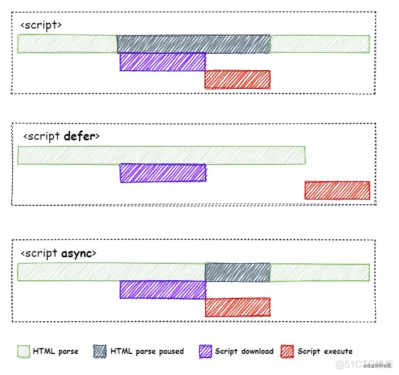

1、HTML的定义
- HTML指的是超文本标记语言（Hyper Text Markup Language)，它是用来描述网页的一种语言。
- HTML不是一种编程语言，而是一种标记语言（markup language）。
2、HTML的基本结构
<!DOCTYPE html>
<html lang="en">
<head>
<meta charset="UTF-8">
<title>Document</title>
</head>
<body></body>
</html>
2.1 <!DOCTYPE html>
<!DOCTYPE html>是html5标准网页声明,全称为Document Type HyperText
Mark-up Language，支持HTML5的浏览器都能识别这个声明，表示这是一个HTML5网页。- 声明文档的解析类型(document.compatMode)，避免浏览器用怪异模式来解析渲染页面。
2.2 document.compatMode
- BackCompat：怪异模式，浏览器使用自己的怪异模式解析渲染页面。---》这样会导致不同浏览器渲染的效果不一样
- CSS1Compat：标准模式，浏览器使用W3C的标准解析渲染页面。
- document.compatMode默认是BackCompat，所以html最好写上文档声明。
2.3 <html lang="en">
- lang属性是指网页的语言，值为
en英文或zh-CN中文。
- lang主要是为了告诉搜索引擎当前页面是英文网址还是中文网站，有利于对网页的搜索；当然也可以不写，不利于搜索而已。
- 总共支持4个全局属性：
charset，http-equiv，name，content
charset定义文档编码格式，防止解析时乱码http-equiv需要结合content属性来使用，以定义一个响应头字段的值。不过在HTML5中，已经不再用这个字段来描述响应头，它所支持的值也缩减为5个(鉴于目前浏览器仍然支持HTML4，因此像expires、cache-control这样被HTML5舍弃的值仍然是有效的)。
HTML5的http-equiv包含以下几个值：
- content-security-policy，定义文档的内容安全策略。
主要目的是抵御XSS（cross-site scripting attacks，跨站点脚本攻击）。
<meta http-equiv="content-security-policy" content="frame-src https://xxx.xxx.xxx; script-src https://xxx.xxx.xxx">
这里的content定义了两个安全策略：frame-src和script-src，它们分别定义的是iframe（frame）和script的域地址，如果对应的资源不是来自指定的域，浏览器就会抛出错误，禁止加载这些资源，这样可以有效防止跨站点攻击。
- content-type，定义文档类型，其值必须是"text/html;
charset=utf-8"。
在HTML5中被<meta charset="UTF-8">所取代.
default-style，设置默认CSS样式表组的名称。已弃用。
它的值必须与某个link或style标签的title一致，以指定该样式表作为当前文档的默认样式表。
<meta http-equiv="default-style" content="main1">
<link rel="stylesheet" href="mystyle.css" title="main1">
- x-ua-compatible，兼容性声明，指定所用浏览器的内核，规范要求此时content的值必须包含"IE=edge"。
- refresh，定义文档的自动刷新策略。
如果对应的content是一个整数，那么页面会在指定的时间间隔（秒）后重新加载；如果content的值是整数后面跟了;url=xxx，并且这个url是个合法的值，那么浏览器会在指定的秒数后跳转到该地址。如：
<!--页面会在20秒后刷新-->
<meta http-equiv="refresh" content="20">
<!--页面会在20秒后跳转到百度-->
<meta http-equiv="refresh" content="20;url=https://www.baidu.com">
name同http-equiv一样，name也需要配合content属性一起使用。与http-equiv不同的是，由name描述的属性与响应头的字段没有对应关系，它们更多的是描述文档本身。
name的常见取值包括：
- application-name，定义正运行在该网页上的网络应用名称。
- author，文档的作者，可以用自由的格式去定义。
- description，定义页面内容的简短和精确的描述，某些浏览器（如Firefox和Opera）会将其作为书签页的默认描述。
- generator，生成页面的软件的标识符。
- keywords，由逗号分隔的页面内容相关的关键词。
- referrer ，控制所有从该文档发出的 HTTP 请求中HTTP Referer 首部的内容。
- creator，文档的创建人。
- googlebot，谷歌专用的爬虫字段。
- publisher，文档的发布人。
- robots ，定义搜索引擎或抓取工具的行为。
- slurp，雅虎专用的抓取工具行为定义。
- viewport，定义移动端的初始视口大小。
它提供有关视口初始大小的提示，仅供移动设备使用。此时content的可选值包括：
| 选项 |
值 |
描述 |
| width |
一个正整数或特殊的字符串‘device-width’ |
值为正整数时，是以像素(px)为单位的页面初始宽度；当为’device-width’时，表示页面初始宽度为设备宽度 |
| height |
一个正整数或者字符串 device-height |
同上，定义页面初始高度 |
| initial-scale |
一个介于0.0到1.0的正数 |
定义设备宽度与视口宽度的百分比，即视口的缩放比例 |
| maximum-scale |
一个0.0到10.0的正数 |
定义缩放的最大值，当达到这个比值时，用户无法继续放大 |
| minimum-scale |
一个0.0到10.0的正数 |
定义缩放的最小值，当达到这个比值时，用户无法继续缩小。minimum-scale必须小于maximum-scale，否则可能造成无法预知的异常
|
| user-scalable |
yes或no |
是否允许用户缩放页面，默认为yes |
- 注意，标准没有严格限制name必须取上述值，你可以用它来描述任何你想描述的元信息。
以下是一个移动设备常用的值：
<meta name="viewport" content="width=device-width, initial-scale=1.0">
<!--表示初始等于设备宽度，不缩放-->
2.5 <link>
- link 标签定义文档与外部资源的关系。通常只存在于head部分。
- 链接外部样式文件
<link rel='stylesheet' href='ease.css' type='text/css' />
- 为网页标题添加自定义图标,sizes定义了链接属性大小，只对属性 rel="icon" 起作用。
<link rel="icon" href="favicon.ico" sizes="192x192" />
2.6 <script>
- 标签用于定义客户端脚本，比如 JavaScript。
- 如果使用 "src" 属性，则
<script> 元素必须是空的。
- js传统脚本
type="text/javascript"
- js模块脚本
type="module"
- 模块标识符的解析
type="importmap"，每一个页面最多只能有一个importmap
<script type="importmap">
{
"imports": { //作用于全局的映射
"moment": "/node_modules/moment/src/moment.js",
"moments/": "/node_modules/moments/src/"
},
"scopes": { //作用于局部映射。常用于在页面内使用同一模块的不同版本。
"/a/" : {
"moment": "/node_modules/moment/src/moment.js"
},
"/b/" : {
"moment": "https://cdn.example.com/moment/src/moment.js"
}
}
}
</script>
<script type="module">
import moment from "moment"
import localeData from "moments/locale/zh-cn.js"
</script>
- 数据块
type="xxx"，用户自定义，浏览器会忽略这个标签的解析。
- js加载属性：
<script defer />延迟加载<script async />异步加载

3、HTML的重要标签
3.1 <a href="" target="">
| 值 |
描述 |
| _blank |
在新窗口中打开被链接文档 |
| _self |
默认。在相同的框架中打开被链接文档 |
| _parent |
在父框架集中打开被链接文档 |
| _top |
在整个窗口中打开被链接文档 |
| framename |
在指定框架中打开被链接文档 |
<a href="https://www.baidu.com">链接</a>
<a href="#top">指向页面中的锚</a><a name="top"></a><p id="top"></p>
<a href="tel:13551262756">打电话(移动端)</a>
<a href="sms:13551262756">发短信(移动端)</a>
<a href="Mailto:your@mail.com">发邮件</a>
- 不常用属性：rel,download,type,hreflang,media等
3.2
<img src="fj.jpg" width="100" height="100" alt="风景" />
| 属性 |
值 |
描述 |
| src |
url |
图像资源的地址 |
| width |
像素px |
图像宽度 |
| height |
像素px |
图像高度 |
| alt |
替代文字 |
图片的替代文字 |
| 属性 |
值 |
描述 |
| width |
px, % |
指定框架的宽度 |
| height |
px, % |
指定框架的高度 |
| scrolling |
yes, no, auto |
是否显示滚动条 |
| frameborder |
1, 0 |
是否显示边框 |
3.4
<textarea name rows cols></textarea>
- rows文本框高度，即行数
- cols文本框宽度，即每行字数
3.5
<canvas width height></canvas>
- width与height指的是画布的宽高，即画布能显示的坐标域为(0,0)到(width,height)
- 可以在css中设置元素宽高，但不会影响画布宽高
3.6
<audio src="" controls><audio>
| 属性 |
值 |
描述 |
| autoplay |
autoplay |
如果出现该属性，则音频在就绪后马上播放。 |
| controls |
controls |
如果出现该属性，则向用户显示音频控件（比如播放/暂停按钮）。 |
| loop |
loop |
如果出现该属性，则每当音频结束时重新开始播放。 |
| muted |
muted |
如果出现该属性，则音频输出为静音。 |
| preload |
auto, metadata, none |
设定音频的预加载方式:
auto自动加载，页面加载后载入整个音频;
metadata自动加载，页面加载后只载入元数据;
none不自动加载;
|
| src |
URL |
规定音频文件的 URL |
- 注意preload和autoplay相冲，如果设置了autoplay属性，那么preload属性就会失效
- 目前，audio 元素支持的3种文件格式：MP3、Wav、Ogg
3.7
<video src="" controls><video>
| 属性 |
值 |
描述 |
| autoplay |
autoplay |
如果出现该属性，则视频在就绪后马上播放 |
| controls |
controls |
如果出现该属性，则向用户显示控件，比如播放按钮。 |
| loop |
loop |
如果出现该属性，则当媒介文件完成播放后再次开始播放 |
| muted |
muted |
如果出现该属性，视频的音频输出为静音。 |
| preload |
auto, metadata, none |
设定视频的预加载方式:
auto自动加载，页面加载后载入整个视频;
metadata自动加载，页面加载后只载入元数据;
none不自动加载;
|
| src |
URL |
规定视频文件的 URL |
| width |
pixels |
设置视频播放器的宽度 |
| height |
pixels |
设置视频播放器的高度 |
| poster |
URL |
规定视频正在下载时显示的图像，直到用户点击播放按钮(封面) |
- 注意preload和autoplay相冲，如果设置了autoplay属性，那么preload属性就会失效
- 目前，video 元素支持三种视频格式：MP4、WebM、Ogg
- MP4 = MPEG 4文件使用 H264 视频编解码器和AAC音频编解码器
- WebM = WebM 文件使用 VP8 视频编解码器和 Vorbis 音频编解码器
- Ogg = Ogg 文件使用 Theora 视频编解码器和 Vorbis音频编解码器